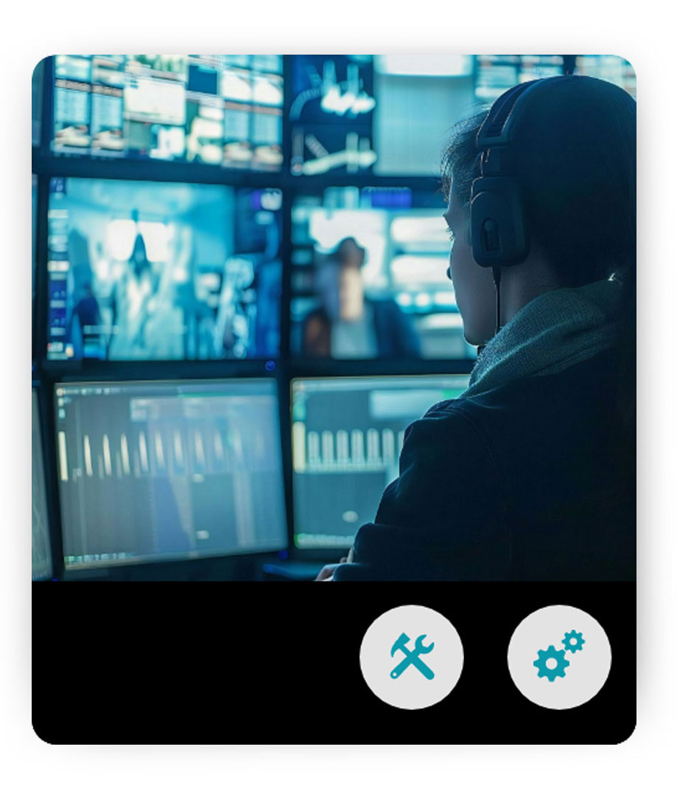
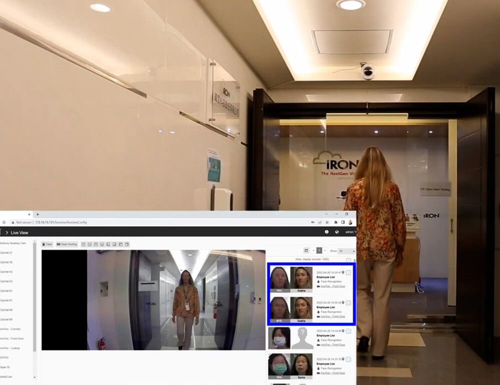
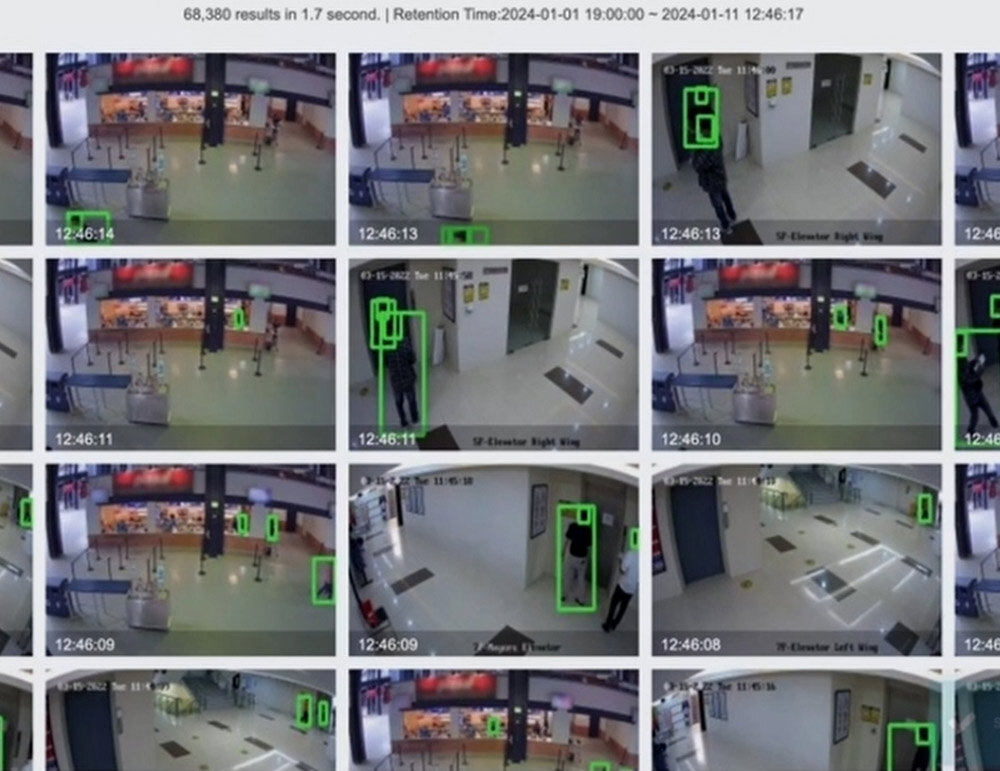
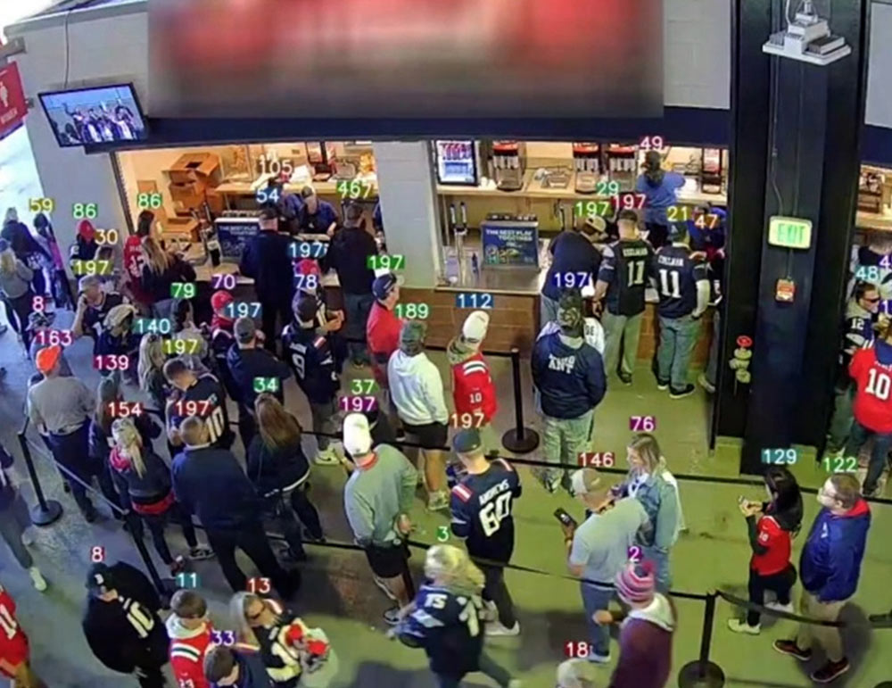
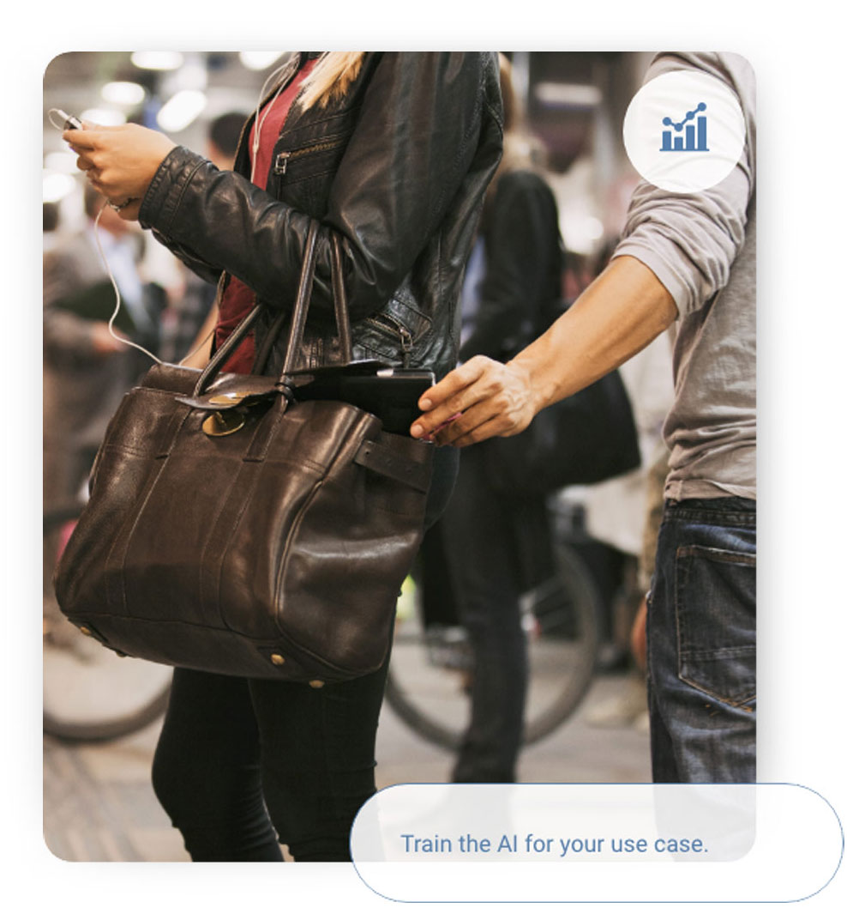

영상 인텔리전스를 재정의합니다 Redefining Video Intelligence
에이전틱 AI가 Vaidio의 모든 기능을 구동하며, 타의 추종을 불허하는 정확도와 성능을 제공합니다. Agentic AI drives every aspect of Vaidio's functionality, for unmatched accuracy and performance.

Vaidio AI Vision이 선택받는 이유 Why Vaidio AI Vision
🔔 즉각적 알림 🔔 Immediate Alerts
중요 이벤트를 즉시 통보하여 더 빠른 대응, 안전 강화, 위험 감소를 실현합니다. Instantly get notified of critical events so you can respond faster, enhance safety, and reduce risks.
🔍 실시간 포렌식 검색 🔍 Real-Time Forensic Search
수동 검토 대비 1,000배 빠른 속도로 조사 효율과 정확도를 획기적으로 높입니다. Dramatically boost investigation speed and accuracy—1,000x faster than manual review.
🤖 적응형 AI 🤖 Adaptable AI
산업별 요구사항에 맞게 AI 분석을 커스터마이즈하여 다양한 비즈니스 운영을 지원합니다. Tailor AI analytics for any industry-specific needs, enabling video intelligence to support diverse business operations.
🎯 커스텀 영상 분석 🎯 Custom Video Analytics
특정 사건, 객체, 패턴을 감지하도록 AI를 훈련하여 어떤 카메라도 강력한 인텔리전스 도구로 변환합니다. Train AI to detect specific events, objects, or patterns—turning any camera into a powerful intelligence tool.
AI 기반 자동 구성으로 손쉬운 설치 Effortless Setup with AI-Powered Autoconfiguration
수동 설정은 이제 AI가 대신합니다. 자동 구성 에이전트가 카메라 장면을 지능적으로 분석하고 적합한 분석 기능을 추천하며 관심 영역(ROI)을 구성하여 배포 시간을 90% 단축합니다. Skip the manual setup—let AI do the work. Our autoconfiguration agent reduces deployment time by 90% by intelligently analyzing camera scenes, recommending appropriate analytics functions, and configuring Regions of Interest (ROIs).
적응형 · 검증된 AI 영상 분석 Adaptable, Proven AI Video Analytics
30개 이상의 고급 AI 분석 엔진으로 신규 또는 기존 IP 카메라 모두에 인텔리전스를 추가합니다. Vaidio features more than 30 advanced, proven AI video analytics that add intelligence to any new or existing IP camera.
안전하고 보안된 공공·민간 공간 구현 Create Smarter, Safer Spaces
잠재적 위협을 신속·정확하게 감지하고 실시간 알림으로 즉각 대응합니다. Provide rapid, accurate detection and real-time alerts to potential threats.

출입 통제의 효과성과 정확도 향상 Improve Access Control Effectiveness
얼굴·ID·번호판·행동을 지속적으로 검증하여 테일게이팅과 미인가 출입을 차단합니다. Continuously verify faces, IDs, license plates, and behaviors to deter tailgating and unauthorized entry.

포렌식 영상 검색의 획기적 가속화 Exponentially Accelerate Forensic Video Search
Vaidio는 쿼리에 2초 이내로 응답하며, 경쟁 AI 솔루션이 몇 시간이 걸리는 수천 시간의 영상을 즉시 검색합니다. Vaidio searches thousands of hours of video in sub-2 seconds—whereas competitive solutions take hours.

영상을 비즈니스 인텔리전스로 전환 Leverage Video as Business Intelligence
의사결정 개선, 고객 경험 향상, 운영 최적화를 위한 구조화된 데이터를 영상에서 추출합니다. Turn video into structured insight to improve decisions, refine customer experience, and optimize operations.
카메라 데이터로 신호등 패턴까지 분석 Manage Traffic Light Patterns from Camera Data
Vaidio는 카메라 데이터에서 직접 신호 패턴을 관리·분석할 수 있는 유일한 AI Vision Platform입니다. 교통 흐름 최적화, 도로 안전 강화, 교통 시스템의 실시간 관리를 지원합니다. The only AI Vision Platform capable of managing traffic light patterns from camera data, optimizing flow, enhancing road safety, and enabling real-time traffic management.
의료 환경에 특화된 신속 배포 Fast Deployment for Healthcare Settings
모든 환경에서 정확한 건강 모니터링을 신속하게 배포하여 지속적인 감시와 시의적절한 개입을 지원합니다. Fast deployment of accurate health monitoring in any setting, supporting continuous surveillance and timely intervention.

커스텀 Vision AI 분석 Custom Vision AI Analytics
Vaidio의 커스텀 분석 기능으로 고객이 관심을 갖는 정확한 이벤트, 객체, 패턴을 AI가 인식하도록 직접 훈련할 수 있습니다. 소매치기 감지, 군중 싸움, 맥주 줄 모니터링, 파손 박스 식별, 연기·구름 감지 등 고유한 사용 사례를 구현한 사례가 있습니다. Vaidio's custom analytics let customers train AI to spot the exact events, objects, or patterns they care about. Customers have trained analytics for pick pocketing, crowd fighting, beer lines, damaged box detection, smoke and cloud.
커스텀 AI 문의 Contact Us About Custom AI모듈형 플랫폼 — 최신 AI와 함께 지속 진화 Modular Platform: Always Evolving with the Latest AI
Vaidio의 모듈형 플랫폼은 AI를 모든 레이어에 통합하여 하드웨어나 인프라 교체 없이도 최신 혁신 기술을 지속적으로 추가합니다. Vaidio's modular platform integrates AI into every layer, seamlessly adding the latest innovations without requiring hardware or infrastructure upgrades.
에이전틱 AI 플랫폼 Agentic AI Platform
에이전틱 AI가 Vaidio의 자동 구성·최적화·의사결정을 구동하여 타의 추종을 불허하는 성능을 제공합니다. Agentic AI drives autoconfiguration, optimization, and decision-making across Vaidio for unmatched performance.
엔터프라이즈급 인프라 Enterprise-Grade Infrastructure
Kubernetes 기반 멀티테넌트, 자동 확장 인프라로 플로팅 분석 라이선스를 지원합니다. Kubernetes-based, multi-tenant, auto-scalable infrastructure with floating analytics licenses.
유연한 배포 방식 Flexible Deployment Options
온프레미스, 클라우드, 하이브리드, 엣지 환경 모두에 배포 가능하며 필요에 따라 조합할 수 있습니다. Deploy on-premises, in the cloud, hybrid environments, or at the edge—mix and match as needed.
기존 VMS 완전 호환 Open VMS Integration
Genetec, Milestone, Avigilon, Axis 등 주요 VMS와 완벽하게 통합되어 기존 인프라를 최대한 활용합니다. Seamlessly integrates with Genetec, Milestone, Avigilon, Axis, and other major VMS platforms.
Vaidio AI Vision Platform 도입을 검토 중이신가요? Ready to Transform Your Video Infrastructure?
퓨텍솔루션즈 전문가와 함께 귀사 환경에 최적화된 Vaidio 솔루션을 설계해 드립니다. Work with Futec Solutions specialists to design the optimal Vaidio solution for your environment.